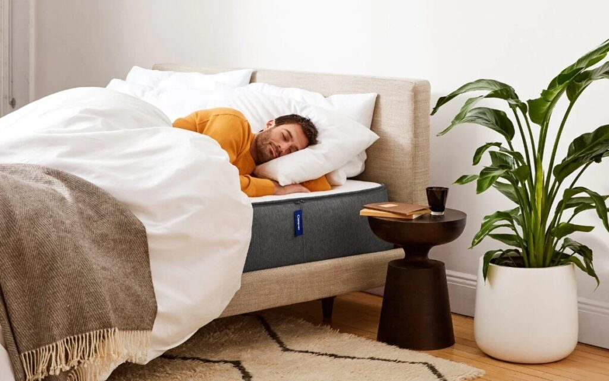
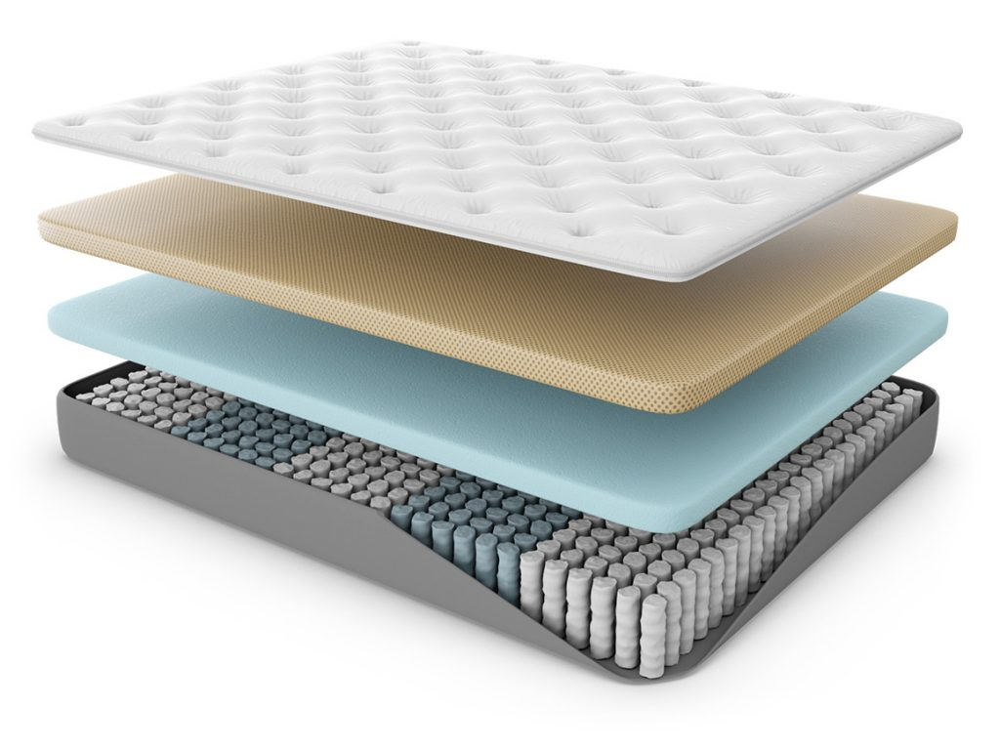
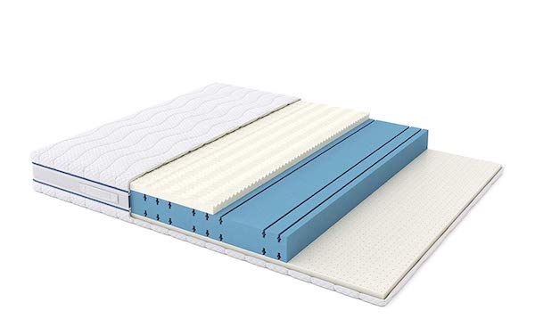

¿Colchón de espuma o resorte?
¿Sabías qué? Aproximadamente 25 años de nuestra vida pasan durmiendo. Este dato hace que una de las decisiones más importantes que tomes giren en torno a tu lugar de descanso.
Por ello, sabemos que un buen descanso es fundamental para nuestra vida diaria ya que nos ayuda a empezar el día con más energía y sin dolores.
Ya nos quedó claro, que hacer una buena inversión en un colchón o sommier es muy importante.
En esta rápida guía aprenderás que conviene: colchon de resortes o de espuma, en base a tu presupuesto y necesidades.
Colchones de resortes
Ventajas:
Por lo general son más duraderos que los de espuma ya que poseen resortes de acero.
No son totalmente rígidos por que ofrecen el rebote característico del resorte.
Son más frescos por permitir una mejor circulación del aire.
Es importante aclarar que existen diferentes tipos de resortes y combinación con refuerzos perimetrales que favorecen la calidad del colchón.
Desventajas:
Si excede el peso para el que fue diseñado, podría deformarse.
Los más económicos tienen pocas capas para aislar el resorte de la espalda.
Consideraciones:
Algunas unidades de resorte podrían hacer ruidos durante el movimiento, en los modelos de gama alta hay opciones de resortes independientes enfundados que evitan este inconveniente además de ajustarse perfectamente a cada parte del cuerpo.
Si tienen pillow top hay que revisar que la espuma sea de alta densidad, porque podría deformarse.
Sugerimos colchones con capas de espuma de alta densidad sobre los resortes.
Debe utilizar bases de sommier uniformes que le permitan la mayor estabilidad y soporte al colchón.


Colchones de espuma
Ventajas:
Brindan movimiento independiente procurando menos interrupciones del sueño cuando son utilizados por más de una persona (Ojo: esto también lo garantizan los colchones de resortes con resortes enfundados individuales).
No hacen ruido durante el movimiento.
Son estables y rígidos, especialmente los de alta densidad.
Existen colchones que combinan diferentes capas de espuma para obtener un mejor soporte y confort.
Permiten fabricar medidas especiales con mejor calidad.
Desventajas:
Si excede el peso para el que fue diseñado podrían deformarse.
En general poseen una durabilidad notablemente inferior a los colchones de resorte por lo que tendrás que tenerlo en cuenta a la hora de invertir. Duran en promedio 5 o 6 años.
Consideraciones:
La densidad de la espuma es muy importante, entre mayor sea ésta mayor duración tendrá la espuma. La densidad está relacionada con el peso del colchón, no con la firmeza. Recomendamos densidad igual o superior 30 Kg/m3.
Si el colchón de espuma es muy liviano, aunque sea duro, significa que es de baja densidad y terminará deformándose con el uso.
Debe utilizar bases con tablas o reglas lisas y uniformes que le permitan la mayor estabilidad y soporte el colchón.